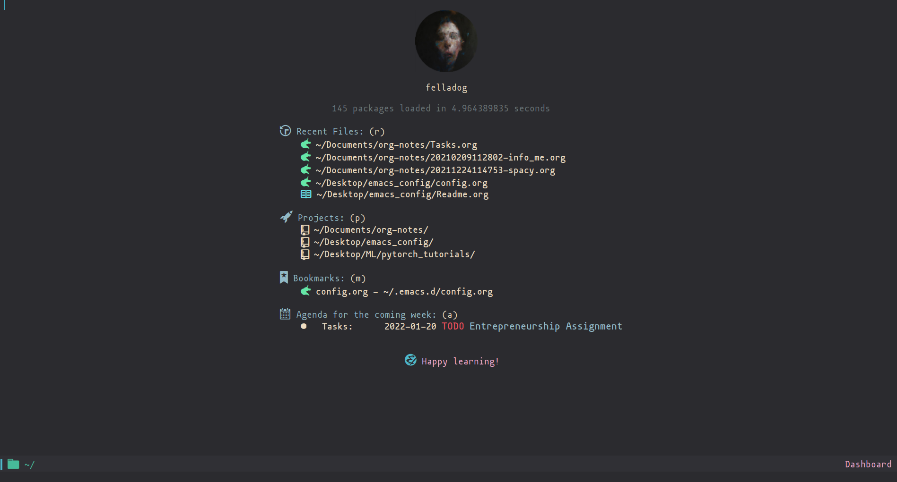
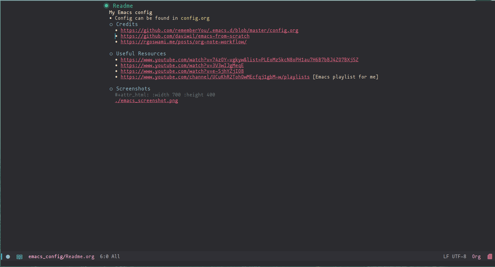

My Emacs Config
Table of Contents
- 1. Readme
- 2. Default
- 3. General
- 4. Package Setup (Straight)
- 5. Theme
- 6. Doom modeline
- 7. Undo and redo
- 8. Ivy
- 9. Evil
- 10. Hydra
- 11. Projectile
- 12. Magit
- 13. Org-Mode
- 14. Lsp
- 15. Treemacs
- 16. Company
- 17. term, vterm
- 18. Dired
- 19. Programming Languages and Tools
- 20. Org download
- 21. Ox-Hugo
- 22. Org roam
- 23. Org-roam-bibtex
- 24. Org transclusion
- 25. Org Wild Notifier
- 26. Dashboard
- 27. Pdf-tools
- 28. MPC
- 29. Deft
- 30. Speed-Type
- 31. bibliography
- 32. Org ref
- 33. org-noter
- 34. org-fc
- 35. yasnippet
- 36. Ledger
- 37. Vertico
1. Readme
My Emacs config
1.1. Credits
1.2. Useful Resources
1.3. Screenshots


2. Default
(setq initial-buffer-choice (lambda () (get-buffer "*dashboard*"))) (scroll-bar-mode -1) ; Disable visible scrollbar (tool-bar-mode -1) ; Disable the toolbar (tooltip-mode -1) ; Disable tooltips (set-fringe-mode 10) ; Give some breathing room ;; (menu-bar-mode -1) ; Disable the menu bar (menu-bar-mode 1) ; Disable the menu bar ;(hs-minor-mode 1) ;enable hs minor mode hide/show code block ;; Set up the visible bell (setq visible-bell t) ;; Font Configuration ---------------------------------------------------------- ;(set-face-attribute 'default nil :font "Fira Code Retina" :height 110) (set-face-attribute 'default nil :font "mononoki" :height 110 :weight 'regular) ;; Set the fixed pitch face (set-face-attribute 'fixed-pitch nil :font "mononoki" :height 110 :weight 'regular) ;; Set the variable pitch face (set-face-attribute 'variable-pitch nil :font "mononoki" :height 110 :weight 'regular) ;; Make ESC quit prompts (global-set-key (kbd "<escape>") 'keyboard-escape-quit) ;; transparency ;; (set-frame-parameter (selected-frame) 'alpha '(98 . 94))
3. General
;; disable backup (setq backup-inhibited t)
4. Package Setup (Straight)
;; Package System Setup ;; straight.el (defvar bootstrap-version) (let ((bootstrap-file (expand-file-name "straight/repos/straight.el/bootstrap.el" user-emacs-directory)) (bootstrap-version 5)) (unless (file-exists-p bootstrap-file) (with-current-buffer (url-retrieve-synchronously "https://raw.githubusercontent.com/raxod502/straight.el/develop/install.el" 'silent 'inhibit-cookies) (goto-char (point-max)) (eval-print-last-sexp))) (load bootstrap-file nil 'nomessage)) (straight-use-package 'use-package) (setq straight-use-package-by-default t) ;; old config ;; Initialize package sources ;; (require 'package) ;; (setq package-archives '(("melpa" . "https://melpa.org/packages/") ;; ("org" . "https://orgmode.org/elpa/") ;; ("elpa" . "https://elpa.gnu.org/packages/"))) ;; (package-initialize) ;; uncomment ;; (unless package-archive-contents ;; (package-refresh-contents)) ;; ;; Initialize use-package on non-Linux platforms ;; (unless (package-installed-p 'use-package) ;; (package-install 'use-package)) ;; (require 'use-package) ;; (setq use-package-always-ensure t) ;; Package System Setup End
5. Theme
;; theme ;; (add-to-list 'custom-theme-load-path "~/.emacs.d/themes") (straight-use-package 'kaolin-themes) ;; (straight-use-package 'atom-one-dark-theme) ;;; dark variants ;; Range: 233 (darkest) ~ 239 (lightest) ;; Default: 237 ;; (straight-use-package 'atom-one-dark-theme) ;; (load-theme 'gruvbox-dark-medium t) ;; (load-theme 'kaolin-light t) (load-theme 'kaolin-temple t) ;; (load-theme 'atom-one-dark t) ;; (load-theme 'kanagawa t)
6. Doom modeline
(use-package doom-modeline :straight t :init (doom-modeline-mode 1) :custom ( (doom-modeline-height 25) ))
7. Undo and redo
(column-number-mode) (global-display-line-numbers-mode t) (setq display-line-numbers-type 'relative) ;; Disable line numbers for some modes (dolist (mode '(org-mode-hook term-mode-hook vterm-mode-hook treemacs-mode-hook shell-mode-hook eshell-mode-hook)) (add-hook mode (lambda () (display-line-numbers-mode 0)))) (use-package command-log-mode) ; undo and redo (use-package undo-tree) (global-undo-tree-mode t) (use-package flycheck :straight t :init (global-flycheck-mode)) (use-package rainbow-delimiters :hook (prog-mode . rainbow-delimiters-mode)) (use-package which-key :init (which-key-mode) :diminish which-key-mode :config (setq which-key-idle-delay 1)) (use-package counsel :straight t :bind (("M-x" . counsel-M-x) ("C-x b" . counsel-ibuffer) ("C-x C-f" . counsel-find-file) :map minibuffer-local-map ("C-r" . 'counsel-minibuffer-history))) ;; :config ;; (counsel-mode 1)) ;(global-set-key (kbd "C-M-j") 'counsel-switch-buffer) (use-package helpful :custom (counsel-describe-function-function #'helpful-callable) (counsel-describe-variable-function #'helpful-variable) :bind ([remap describe-function] . counsel-describe-function) ([remap describe-command] . helpful-command) ([remap describe-variable] . counsel-describe-variable) ([remap describe-key] . helpful-key)) ; stream 3 (use-package general :config (general-create-definer rune/leader-keys :keymaps '(normal insert visual emacs) :prefix "SPC" :global-prefix "C-SPC") (rune/leader-keys "t" '(:ignore t :which-key "toggles") "tt" '(counsel-load-theme :which-key "choose theme")))
7.1. All the icons
(use-package all-the-icons)
8. Ivy
(use-package ivy :diminish :bind (("C-s" . swiper) :map ivy-minibuffer-map ("TAB" . ivy-alt-done) ("C-l" . ivy-alt-done) ("C-n" . ivy-next-line) ("C-p" . ivy-previous-line) :map ivy-switch-buffer-map ("C-k" . ivy-previous-line) ("C-l" . ivy-done) ("C-d" . ivy-switch-buffer-kill) :map ivy-reverse-i-search-map ("C-k" . ivy-previous-line) ("C-d" . ivy-reverse-i-search-kill)) :config (ivy-mode 1)) (use-package ivy-rich :straight t :init (ivy-rich-mode 1)) (use-package ivy-posframe :straight t :delight :config (setq ivy-posframe-display-functions-alist '((t . ivy-posframe-display-at-frame-center))) (ivy-posframe-mode 1))
9. Evil
(use-package evil :init (setq evil-want-integration t) (setq evil-want-keybinding nil) (setq evil-want-C-u-scroll t) (setq evil-want-C-i-jump nil) (setq evil-emacs-state-cursor '("#b7c63f" bar)) (setq evil-normal-state-cursor '("#3faec6" bar)) (setq evil-insert-state-cursor '("#3fabc6" bar)) (setq evil-undo-system 'undo-tree) :config (evil-mode 1) (define-key evil-insert-state-map (kbd "C-g") 'evil-normal-state) (define-key evil-insert-state-map (kbd "C-h") 'evil-delete-backward-char-and-join) ; alternative C-x C-s (define-key evil-normal-state-map (kbd ",w") 'save-buffer) ; alternative C-w c (define-key evil-normal-state-map (kbd ",q") 'evil-window-delete) ; (evil-normal-state-map C-r) ;; Use visual line motions even outside of visual-line-mode buffers (evil-global-set-key 'motion "j" 'evil-next-visual-line) (evil-global-set-key 'motion "k" 'evil-previous-visual-line) (evil-set-initial-state 'messages-buffer-mode 'normal) (evil-set-initial-state 'dashboard-mode 'normal)) (use-package evil-collection :after evil :config (evil-collection-init))
9.1. Evil Nerd commenter
(use-package evil-nerd-commenter) (define-key evil-normal-state-map (kbd ", c SPC") 'evilnc-comment-or-uncomment-lines)
9.2. ein
(use-package ein) (use-package evil-numbers) (define-key evil-normal-state-map (kbd ", a") 'evil-numbers/inc-at-pt) (define-key evil-normal-state-map (kbd ", x") 'evil-numbers/dec-at-pt) ;;(require 'evil-numbers) ;;(global-set-key (kbd "c-c +") 'evil-numbers/inc-at-pt) ;;(global-set-key (kbd "c-c -") 'evil-numbers/dec-at-pt) ;;(global-set-key (kbd "c-c c-+") 'evil-numbers/inc-at-pt-incremental) ;;(global-set-key (kbd "c-c c--") 'evil-numbers/dec-at-pt-incremental)
10. Hydra
(use-package hydra) (defhydra hydra-text-scale (:timeout 4) "scale text" ("j" text-scale-increase "in") ("k" text-scale-decrease "out") ("f" nil "finished" :exit t)) (rune/leader-keys "s" '(hydra-text-scale/body :which-key "scale text"))
11. Projectile
(use-package projectile :diminish projectile-mode :config (projectile-mode) :custom ((projectile-completion-system 'ivy)) :bind-keymap ("C-c p" . projectile-command-map) :init ;; NOTE: Set this to the folder where you keep your Git repos! (when (file-directory-p "~/Desktop/Workspace") (setq projectile-project-search-path '("~/Desktop/Workspace" "~/Desktop/ML"))) (setq projectile-switch-project-action #'projectile-dired)) (use-package counsel-projectile :config (counsel-projectile-mode))
12. Magit
(use-package magit :custom (magit-display-buffer-function #'magit-display-buffer-same-window-except-diff-v1)) ; (use-package evil-magit ; :after magit)
13. Org-Mode
(defun efs/org-font-setup () ;; Replace list hyphen with dot (font-lock-add-keywords 'org-mode '(("^ *\\([-]\\) " (0 (prog1 () (compose-region (match-beginning 1) (match-end 1) "•")))))) ;; Set faces for heading levels (dolist (face '((org-level-1 . 1.2) (org-level-2 . 1.1) (org-level-3 . 1.05) (org-level-4 . 1.0) (org-level-5 . 1.1) (org-level-6 . 1.1) (org-level-7 . 1.1) (org-level-8 . 1.1))) (set-face-attribute (car face) nil :font "mononoki" :weight 'regular :height (cdr face))) ;; Ensure that anything that should be fixed-pitch in Org files appears that way (set-face-attribute 'org-block nil :foreground nil :inherit 'fixed-pitch) (set-face-attribute 'org-code nil :inherit '(shadow fixed-pitch)) ;(set-face-attribute 'org-table nil :inherit '(shadow fixed-pitch)) (set-face-attribute 'org-verbatim nil :inherit '(shadow fixed-pitch)) (set-face-attribute 'org-special-keyword nil :inherit '(font-lock-comment-face fixed-pitch)) (set-face-attribute 'org-meta-line nil :inherit '(font-lock-comment-face fixed-pitch)) (set-face-attribute 'org-checkbox nil :inherit 'fixed-pitch)) (defun efs/org-mode-setup () (org-indent-mode) (variable-pitch-mode 1) (visual-line-mode 1)) (use-package org :hook (org-mode . efs/org-mode-setup) :config (setq org-ellipsis " ⤵") (setq org-hide-emphasis-markers t) (setq org-agenda-start-with-log-mode t) (setq org-log-done 'time) (setq org-log-into-drawer t) ;; timer notifiication sound (setq org-clock-sound "~/.emacs.d/ping.wav") (setq org-agenda-files '("~/Dropbox/org-notes/Tasks.org" "~/Dropbox/org-notes/work/work_task.org" )) ;; "~/Dropbox/org-notes/Goals.org" ;; setting org for latex (setq org-latex-compiler "xelatex") (setq org-latex-listings 'minted org-latex-packages-alist '(("" "minted")) org-latex-pdf-process '("pdflatex -shell-escape -interaction nonstopmode -output-directory %o %f" "pdflatex -shell-escape -interaction nonstopmode -output-directory %o %f" "pdflatex -shell-escape -interaction nonstopmode -output-directory %o %f")) ;; (setq org-latex-minted-options '(("bgcolor" "bg"))) (setq org-format-latex-options '(:foreground default :background default :scale 3.0 :html-foreground "Black" :html-background "Transparent" :html-scale 3.0 :matchers ("begin" "$1" "$$" "\\(" "\\["))) (setq org-todo-keywords '((sequence "TODO(t)" "NEXT(n)" "|" "DONE(d!)") (sequence "BACKLOG(b)" "PLAN(p)" "READY(r)" "ACTIVE(a)" "REVIEW(v)" "WAIT(w@/!)" "HOLD(h)" "|" "COMPLETED(c)" "CANC(k@)"))) (setq org-tag-alist '((:startgroup) ; Put mutually exclusive tags here (:endgroup) ("@errand" . ?E) ("@home" . ?H) ("@work" . ?W) ("agenda" . ?a) ("planning" . ?p) ("publish" . ?P) ("batch" . ?b) ("note" . ?n) ("idea" . ?i))) (setq org-refile-targets '(("Archive.org" :maxlevel . 1) ("Tasks.org" :maxlevel . 1))) ;; Save Org buffers after refiling! (advice-add 'org-refile :after 'org-save-all-org-buffers) ;; Configure custom agenda views (setq org-agenda-custom-commands '(("d" "Dashboard" ((agenda "" ((org-deadline-warning-days 7))) (todo "NEXT" ((org-agenda-overriding-header "Next Tasks"))) (tags-todo "agenda/ACTIVE" ((org-agenda-overriding-header "Active Projects"))))) ("n" "Next Tasks" ((todo "NEXT" ((org-agenda-overriding-header "Next Tasks"))))) ("W" "Work Tasks" tags-todo "+work-email") ;; Low-effort next actions ("e" tags-todo "+TODO=\"NEXT\"+Effort<15&+Effort>0" ((org-agenda-overriding-header "Low Effort Tasks") (org-agenda-max-todos 20) (org-agenda-files org-agenda-files))) ("w" "Workflow Status" ((todo "WAIT" ((org-agenda-overriding-header "Waiting on External") (org-agenda-files org-agenda-files))) (todo "REVIEW" ((org-agenda-overriding-header "In Review") (org-agenda-files org-agenda-files))) (todo "PLAN" ((org-agenda-overriding-header "In Planning") (org-agenda-todo-list-sublevels nil) (org-agenda-files org-agenda-files))) (todo "BACKLOG" ((org-agenda-overriding-header "Project Backlog") (org-agenda-todo-list-sublevels nil) (org-agenda-files org-agenda-files))) (todo "READY" ((org-agenda-overriding-header "Ready for Work") (org-agenda-files org-agenda-files))) (todo "ACTIVE" ((org-agenda-overriding-header "Active Projects") (org-agenda-files org-agenda-files))) (todo "COMPLETED" ((org-agenda-overriding-header "Completed Projects") (org-agenda-files org-agenda-files))) (todo "CANC" ((org-agenda-overriding-header "Cancelled Projects") (org-agenda-files org-agenda-files))))))) (setq org-capture-templates `(("t" "Tasks / Projects") ("tt" "Task" entry (file+olp "~/Dropbox/org-notes/Tasks.org" "Inbox") "* TODO %?\n %u\n %a\n" :empty-lines 1) ("i" "Ideas") ("ii" "Idea" entry (file+olp "~/Dropbox/org-notes/Ideas.org" "Ideas") "* TODO %?\n %u\n %a\n" :empty-lines 1) ("j" "Journal Entries") ("jj" "Journal" entry (file+olp+datetree "~/Dropbox/org-notes/Journal.org") "\n* %<%i:%m %p> - Journal :Journal:\n\n%?\n\n" ;; ,(dw/read-file-as-string "~/notes/templates/daily.org") :clock-in :clock-resume :empty-lines 1) ("jm" "Meeting" entry (file+olp+datetree " ~/Dropbox/org-notes/Journal.org") "* %<%i:%m %p> - %a :meetings:\n\n%?\n\n" :clock-in :clock-resume :empty-lines 1) ("w" "Workflows") ("we" "Checking Email" entry (file+olp+datetree "~/Dropbox/org-notes/Journal.org") "* Checking Email :email:\n\n%?" :clock-in :clock-resume :empty-lines 1) )) (define-key global-map (kbd "C-c j") (lambda () (interactive) (org-capture nil))) (efs/org-font-setup))
13.1. Org Toc
toc-org will maintain a table of contents at the first heading that has a :TOC: tag.
(use-package toc-org :after org :hook (org-mode . toc-org-enable))
13.2. Org Bullets
(use-package org-bullets :after org :hook (org-mode . org-bullets-mode) :custom (org-bullets-bullet-list '("◉" "○" "●" "○" "●" "○" "●"))) (defun efs/org-mode-visual-fill () (setq visual-fill-column-width 100 visual-fill-column-center-text t) (visual-fill-column-mode 1)) (use-package visual-fill-column :hook (org-mode . efs/org-mode-visual-fill)) (org-babel-do-load-languages 'org-babel-load-languages '((emacs-lisp . t) (python . t))) (setq org-confirm-babel-evaluate nil) ;; this is needed as of org 9.2 (require 'org-tempo) (add-to-list 'org-structure-template-alist '("sh" . "src shell")) (add-to-list 'org-structure-template-alist '("el" . "src emacs-lisp")) (add-to-list 'org-structure-template-alist '("py" . "src python")) (add-to-list 'org-structure-template-alist '("py1" . "src python :results output"))
13.3. Automatically tangle our config.org file when we save it
;; Automatically tangle our Emacs.org config file when we save it (defun efs/org-babel-tangle-config () (when (string-equal (buffer-file-name) (expand-file-name "~/.emacs.d/config.org")) ;; Dynamic scoping to the rescue (let ((org-confirm-babel-evaluate nil)) (org-babel-tangle)))) (add-hook 'org-mode-hook (lambda () (add-hook 'after-save-hook #'efs/org-babel-tangle-config)))
14. Lsp
(defun efs/lsp-mode-setup () (setq lsp-headerline-breadcrumb-segments '(path-up-to-project file symbols)) (lsp-headerline-breadcrumb-mode)) (use-package lsp-mode :commands (lsp lsp-deferred) :hook (lsp-mode . efs/lsp-mode-setup) :init (setq lsp-keymap-prefix "C-c l") ;; or 'c-l', 's-l' :config (lsp-enable-which-key-integration t) :custom (lsp-headerline-breadcrumb-enable nil) (lsp-enable-indentation nil) (lsp-enable-on-type-formatting nil) (lsp-modeline-code-actions-enable nil) (lsp-modeline-diagnostics-enable nil) (lsp-clients-clangd-args '("--header-insertion=never"))) (use-package lsp-ui :hook (lsp-mode . lsp-ui-mode) :custom (lsp-ui-doc-enable nil) (lsp-ui-doc-position 'bottom) (lsp-ui-doc-max-height '10) (lsp-ui-doc-max-width '140) ) (use-package lsp-ivy)
15. Treemacs
(use-package treemacs :straight t :defer t :init (with-eval-after-load 'winum (define-key winum-keymap (kbd "M-0") #'treemacs-select-window)) :config (progn (treemacs-filewatch-mode t) (treemacs-fringe-indicator-mode 'always) (pcase (cons (not (null (executable-find "git"))) (not (null treemacs-python-executable))) (`(t . t) (treemacs-git-mode 'deferred)) (`(t . _) (treemacs-git-mode 'simple)))) :bind (:map global-map ("M-0" . treemacs-display-current-project-exclusively) ("C-x t 1" . treemacs-delete-other-windows) ("C-x t t" . treemacs) ("C-x t B" . treemacs-bookmark) ("C-x t C-t" . treemacs-find-file) ("C-x t M-t" . treemacs-find-tag))) (use-package lsp-treemacs :after lsp) (use-package treemacs-evil :after treemacs evil :straight t) (use-package treemacs-magit :after treemacs magit :straight t) (use-package treemacs-persp ;;treemacs-perspective if you use perspective.el vs. persp-mode :after treemacs persp-mode ;;or perspective vs. persp-mode :straight t :config (treemacs-set-scope-type 'perspectives))
16. Company
;; (smartparens-global-mode t) (use-package company :after (:any lsp-mode org-mode org-roam-mode) :hook ((lsp-mode . company-mode) (org-mode . company-mode) (org-roam-mode . company-mode)) :bind (:map company-active-map ("<tab>" . company-complete-selection)) (:map lsp-mode-map ("<tab>" . company-indent-or-complete-common)) :custom (company-minimum-prefix-length 2) (company-idle-delay 0.25) (add-to-list 'company-backends 'company-capf) (setq completion-ignore-case t)) ;; (setq completion-ignore-case t) (use-package company-box :hook (company-mode . company-box-mode))
17. term, vterm
(use-package term :config (setq explicit-shell-file-name "zsh") ;; change this to zsh, etc ;;(setq explicit-zsh-args '()) ;; use 'explicit-<shell>-args for shell-specific args ;; match the default bash shell prompt. update this if you have a custom prompt (setq term-prompt-regexp "^[^#$%>\n]*[#$%>] *")) (use-package eterm-256color :hook (term-mode . eterm-256color-mode)) (use-package vterm :ensure t :commands vterm :config (setq term-prompt-regexp "^[^#$%>\n]*[#$%>] *") ;; set this to match your custom shell prompt (setq vterm-shell "zsh") ;; set this to customize the shell to launch (setq vterm-max-scrollback 10000))
18. Dired
(use-package dired :straight nil :commands (dired dired-jump) :bind (("C-x C-j" . dired-jump)) :custom ((dired-listing-switches "-agho --group-directories-first")) :config (evil-collection-define-key 'normal 'dired-mode-map "h" 'dired-single-up-directory "l" 'dired-single-buffer)) (use-package dired-single) (use-package all-the-icons-dired :hook (dired-mode . all-the-icons-dired-mode)) (use-package dired-hide-dotfiles :hook (dired-mode . dired-hide-dotfiles-mode) :config (evil-collection-define-key 'normal 'dired-mode-map "H" 'dired-hide-dotfiles-mode))
18.1. Dired Sidebar
(use-package dired-sidebar :straight t :commands (dired-sidebar-toggle-sidebar))
19. Programming Languages and Tools
19.1. Bash
(use-package lsp-mode :commands lsp :hook (sh-mode . lsp))
19.2. Dockerfile
(use-package dockerfile-mode :delight "δ" :mode "Dockerfile\\'")
19.3. Latex/Ox Latex
(with-eval-after-load 'ox-latex (add-to-list 'org-latex-classes '("org-plain-latex" "\\documentclass{article} [NO-DEFAULT-PACKAGES] [PACKAGES] [EXTRA]" ("\\section{%s}" . "\\section*{%s}") ("\\subsection{%s}" . "\\subsection*{%s}") ("\\subsubsection{%s}" . "\\subsubsection*{%s}") ("\\paragraph{%s}" . "\\paragraph*{%s}") ("\\subparagraph{%s}" . "\\subparagraph*{%s}")))) (put 'upcase-region 'disabled nil)
19.4. Python
;; (use-package lsp-python-ms ;; :straight t ;; :init (setq lsp-python-ms-auto-install-server t) ;; :hook (python-mode . (lambda () ;; (require 'lsp-python-ms) ;; (lsp-deferred)))) ; or lsp-deferred (use-package python-mode :straight nil :hook (python-mode . lsp-deferred) :custom ;; NOTE: Set these if Python 3 is called "python3" on your system! (python-shell-interpreter "python")) ;; ;; (dap-python-executable "python3") ;; ;; (dap-python-debugger 'debugpy) ;; ;; :config ;; ;; (require 'dap-python)) (use-package pyvenv :config (setenv "WORKON_HOME" "~/.pyenv/versions") ;; (setenv "WORKON_HOME" "~/anaconda3/envs") (pyvenv-mode 1) (pyvenv-tracking-mode 1)) (require 'org-id) (setq org-id-link-to-org-use-id t)
19.5. Rust
(use-package rustic :mode ("\\.rs\\'" . rustic-mode) :config (setq rustic-lsp-client 'lsp-mode rustic-lsp-server 'rust-analyzer rustic-analyzer-command '("~/.local/bin/rust-analyzer")))
19.6. YAML
(use-package yaml-mode :delight "ψ" :hook (yaml-mode . lsp-deferred) :mode ("\\.\\(yaml\\|yml\\)\\'"))
20. Org download
(use-package org-download :after org :bind (:map org-mode-map (("s-Y" . org-download-screenshot) ("s-y" . org-download-yank))))
21. Ox-Hugo
(use-package ox-hugo :straight t :after ox)
22. Org roam
(use-package org-roam :straight t :custom (org-roam-directory (file-truename "~/Dropbox/org-notes/")) (org-roam-dailies-directory "journals/") (org-roam-file-extensions '("org")) :bind (:map global-map (("C-c n l" . org-roam-buffer-toggle) ("C-c n f" . org-roam-node-find) ("C-c n g" . org-roam-graph)) :map org-mode-map (("C-c n i" . org-roam-node-insert)) (("C-c n I" . org-roam-insert-immediate))) :config (org-roam-setup) (setq org-roam-auto-replace-fuzzy-links nil) (setq org-roam-completion-everywhere t) (setq org-roam-prefer-id-links t) (setq org-roam-graph-exclude-matcher '("pages" "journals")) (setq org-roam-capture-templates '(("d" "default" plain (file "~/Dropbox/org-notes/templates/plainTemplate.org") :if-new (file+head "%<%Y%m%d%H%M%S>-${slug}.org" "#+title: ${title} \n#+date: %(format-time-string \"%Y-%m-%d %H:%M\") \n") :unnarrowed t) ("b" "book" plain (file "~/Dropbox/org-notes/templates/plainTemplate.org") :if-new (file+head "book/%<%Y%m%d%H%M%S>-${slug}.org" "#+title: ${title} \n#+date: %(format-time-string \"%Y-%m-%d %H:%M\") \n") :unnarrowed t) ("p" "project journal" plain (file "~/Dropbox/org-notes/templates/plainTemplate.org") :if-new (file+head "p_journals/%<%Y%m%d%H%M%S>-${slug}.org" "#+title: ${title} \n#+date: %(format-time-string \"%Y-%m-%d %H:%M\") \n") :unnarrowed t) ("w" "work" plain (file "~/Dropbox/org-notes/templates/workTemplate.org") :if-new (file+head "work/%<%Y%m%d%H%M%S>-${slug}.org" "#+title: ${title} \n#+date: %(format-time-string \"%Y-%m-%d %H:%M\") \n") :unnarrowed t))) ;; Org-roam interface ;; the directory of the node (cl-defmethod org-roam-node-directories ((node org-roam-node)) (if-let ((dirs (file-name-directory (file-relative-name (org-roam-node-file node) org-roam-directory)))) (format "(%s)" (car (f-split dirs))) "")) ;; backlinks count (cl-defmethod org-roam-node-backlinkscount ((node org-roam-node)) (let* ((count (caar (org-roam-db-query [:select (funcall count source) :from links :where (= dest $s1) :and (= type "id")] (org-roam-node-id node))))) (format "[%d]" count))) ;; 1 title tags (setq org-roam-node-display-template "${backlinkscount:4} ${directories:15} ${title:80} ${tags:60}") ) (setq org-roam-v2-ack t) ;; for org-roam-buffer-toggle (add-to-list 'display-buffer-alist '(("\\*org-roam\\*" (display-buffer-in-direction) (direction . right) (window-width . 0.23) (window-height . fit-window-to-buffer))))
22.1. Org roam ui
(use-package org-roam-ui :straight (:host github :repo "org-roam/org-roam-ui" :branch "main" :files ("*.el" "out")) :after org-roam :hook (org-roam . org-roam-ui-mode))
22.1.1. simple httpd
;; org roam ui (straight-use-package 'simple-httpd)
23. Org-roam-bibtex
(use-package org-roam-bibtex :straight t :after (org-roam) :hook (org-roam-mode . org-roam-bibtex-mode) :config (require 'org-ref))
24. Org transclusion
(use-package org-transclusion :straight '(org-transclusion :host github :repo "nobiot/org-transclusion" :branch "main" :files ("*.el")) :after org :bind (:map global-map (("<f12>" . #'org-transclusion-add) ("C-c n t" . #'org-transclusion-mode) )))
25. Org Wild Notifier
(use-package org-wild-notifier :ensure t :init (org-wild-notifier-mode 1) :custom (alert-default-style 'libnotify) (org-wild-notifier-alert time '(1 5 30)) (org-wild-notifier-keyword-whitelist '("TODO" "NEXT")) (org-wild-notifier-alert-times-property "WILD_NOTIFY") (org-wild-notifier-notification-title "Org Alert!"))
26. Dashboard
(use-package dashboard :straight t :config (setq dashboard-banner-logo-title " felladog") (setq dashboard-startup-banner "~/.emacs.d/pc.png") (setq dashboard-center-content t) (setq dashboard-set-heading-icons t) (setq dashboard-set-file-icons t) (setq dashboard-projects-backend 'projectile) (setq dashboard-items '((recents . 5) (projects . 3) (bookmarks . 5) (agenda . 5))) (setq dashboard-footer-messages '("Happy learning!")) (dashboard-setup-startup-hook))
27. Pdf-tools
(use-package pdf-tools :pin manual ;; manually update :straight t :config ;; initialise ;; (pdf-tools-install) ;; open pdfs scaled to fit page (setq-default pdf-view-display-size 'fit-page) ;; automatically annotate highlights (setq pdf-annot-activate-created-annotations t) ;; use normal isearch (define-key pdf-view-mode-map (kbd "C-s") 'isearch-forward))
28. MPC
(setq mpc-browser-tags '(Filename) mpc-host "0.0.0.0:6900" mpc-songs-format "%-20{Artist} %26{Title} %40{Album} %4{Time}") (global-set-key (kbd "C-c C-p") 'mpc-play-at-point) ;; song_columns_list_format = "(2)[magenta]{} (23)[red]{a} (26)[yellow]{t|f} (40)[green]{b} (4)[blue]{l}"
29. Deft
(use-package deft :config (setq deft-directory "~/Dropbox/org-notes/" deft-extensions '("org") deft-recursive t deft-strip-summary-regexp ":PROPERTIES:\n\\(.+\n\\)+:END:\n" deft-use-filename-as-title t) :bind ("C-c n d" . deft))
30. Speed-Type
(straight-use-package 'speed-type)
Executing M-x speed-type-text will start the typing exercise.
31. bibliography
31.1. ivy-bibtex
(straight-use-package 'ivy-bibtex)
31.2. helm-bibtex
(straight-use-package 'helm-bibtex)
31.3. setting up
(setq bibtex-completion-notes-path "~/Dropbox/org-notes/paper_notes/" bibtex-completion-bibliography "~/Dropbox/org-notes/bib/zotBiB.bib" bibtex-completion-pdf-field "file" bibtex-completion-notes-template-multiple-files(concat "#+TITLE: ${title}\n" "#+ROAM_KEY: cite:${=key=}\n" "* TODO Notes\n" ":PROPERTIES:\n" ":Custom_ID: ${=key=}\n" ":NOTER_DOCUMENT: %(orb-process-file-field \"${=key=}\")\n" ":AUTHOR: ${author-abbrev}\n" ":JOURNAL: ${journaltitle}\n" ":DATE: ${date}\n" ":YEAR: ${year}\n" ":DOI: ${doi}\n" ":URL: ${url}\n" ":END:\n\n" ) )
32. Org ref
(straight-use-package 'org-ref)
32.1. Org ref and ivy bibtex
(require 'org-ref-ivy) (setq org-ref-insert-link-function 'org-ref-insert-link-hydra/body org-ref-insert-cite-function 'org-ref-cite-insert-ivy org-ref-insert-label-function 'org-ref-insert-label-link org-ref-insert-ref-function 'org-ref-insert-ref-link org-ref-cite-onclick-function (lambda (_) (org-ref-citation-hydra/body)))
33. org-noter
(use-package org-noter :straight t :after (:any org pdf-view) :config (setq ;; The WM can handle splits org-noter-notes-window-location 'other-frame ;; Please stop opening frames org-noter-always-create-frame nil ;; I want to see the whole file org-noter-hide-other nil ;; Everything is relative to the main notes file org-noter-notes-search-path (list "/home/Dropbox/org-notes/paper_notes/" ) ) )
34. org-fc
(straight-use-package '(org-fc :type git :repo "https://git.sr.ht/~l3kn/org-fc" :files (:defaults "awk" "demo.org") :after org :custom (org-fc-directories '("~/Dropbox/org-notes/orgfc/")) :config (require 'org-fc-hydra)))
35. yasnippet
(straight-use-package 'yasnippet) (setq yas-snippet-dirs '("~/.emacs.d/snippets" ;; personal snippets )) (yas-global-mode 1) ;; tetsst
36. Ledger
https://github.com/ledger/ledger-mode
(use-package ledger-mode :straight t :ensure t :init (setq ledger-clear-whole-transactions 1) :config (add-to-list 'evil-emacs-state-modes 'ledger-report-mode) :mode "\\.dat\\'")
37. Vertico
:ID: 0272e9ed-9736-4317-98e3-9353cde73c4d
;; ;; Enable vertico ;; (use-package vertico ;; :straight t ;; :ensure t ;; :init ;; (vertico-mode) ;; ;; ;; Different scroll margin ;; ;; (setq vertico-scroll-margin 0) ;; ;; ;; Show more candidates ;; ;; (setq vertico-count 20) ;; ;; ;; Grow and shrink the Vertico minibuffer ;; ;; (setq vertico-resize t) ;; ;; ;; Optionally enable cycling for `vertico-next' and `vertico-previous'. ;; (setq vertico-cycle t) ;; ) ;; ;; ;; Optionally use the `orderless' completion style. See ;; ;; `+orderless-dispatch' in the Consult wiki for an advanced Orderless style ;; ;; dispatcher. Additionally enable `partial-completion' for file path ;; ;; expansion. `partial-completion' is important for wildcard support. ;; ;; Multiple files can be opened at once with `find-file' if you enter a ;; ;; wildcard. You may also give the `initials' completion style a try. ;; (use-package orderless ;; :straight t ;; :ensure t ;; :init ;; ;; Configure a custom style dispatcher (see the Consult wiki) ;; ;; (setq orderless-style-dispatchers '(+orderless-dispatch) ;; ;; orderless-component-separator #'orderless-escapable-split-on-space) ;; (setq completion-styles '(orderless) ;; completion-category-defaults nil ;; completion-category-overrides '((file (styles partial-completion))))) ;; ;; ;; Persist history over Emacs restarts. Vertico sorts by history position. ;; (use-package savehist ;; :straight t ;; :ensure t ;; :init ;; (savehist-mode))